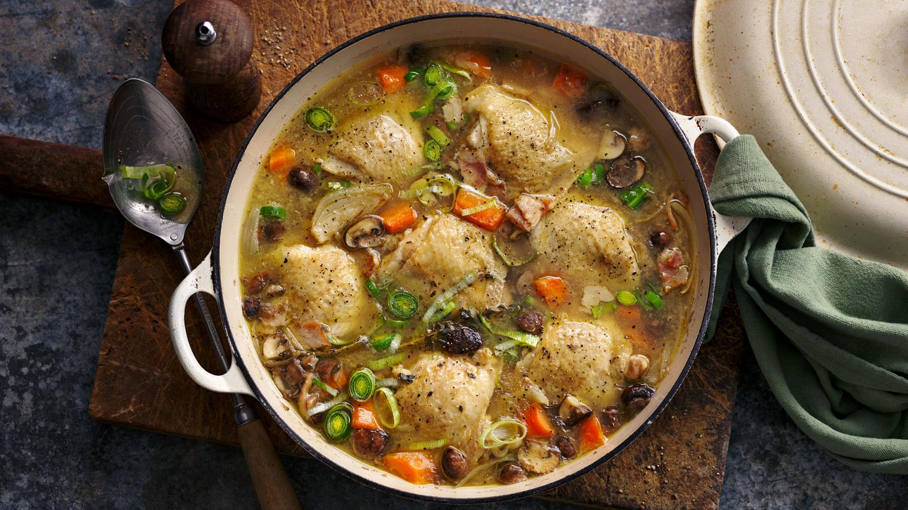

Home
Chicken Casserole

Description
This creamy, comforting chicken casserole is made with tender chicken, vegetables, and a rich, cheesy sauce, all baked together to perfection. It's a great dish for family dinners or meal prepping.
Ingredients
- 3 cups cooked, shredded chicken
- 1 can (10.5 oz) cream of chicken soup
- 1 cup sour cream
- 1 cup shredded cheddar cheese
- 1 cup frozen peas and carrots
- 1 small onion, chopped
- 1 tsp garlic powder
- 1/2 tsp salt
- 1/4 tsp black pepper
- 1 1/2 cups crushed potato chips or breadcrumbs (for topping)
- 2 tbsp melted butter (for topping)
Steps
- Preheat the oven to 375°F (190°C). In a large bowl, combine shredded chicken, cream of chicken soup, sour cream, cheddar cheese, peas and carrots, chopped onion, garlic powder, salt, and pepper. Mix well.
- Transfer the mixture into a greased 9x13-inch baking dish and spread it evenly.
- In a small bowl, mix the crushed potato chips or breadcrumbs with melted butter. Sprinkle this topping evenly over the casserole.
- Bake uncovered for 25-30 minutes, or until the casserole is hot and bubbly and the topping is golden brown.
- Let the casserole sit for 5 minutes before serving.